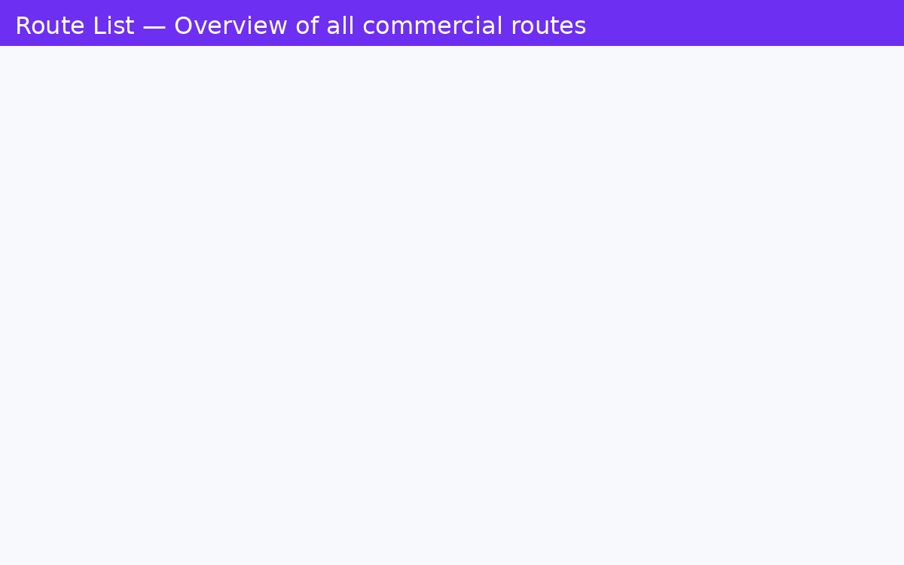
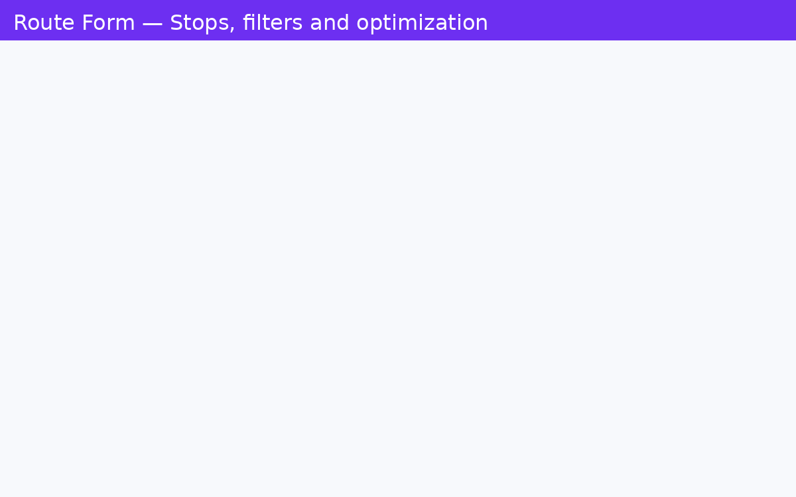
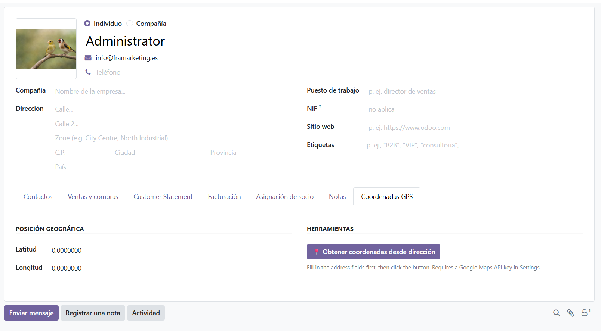
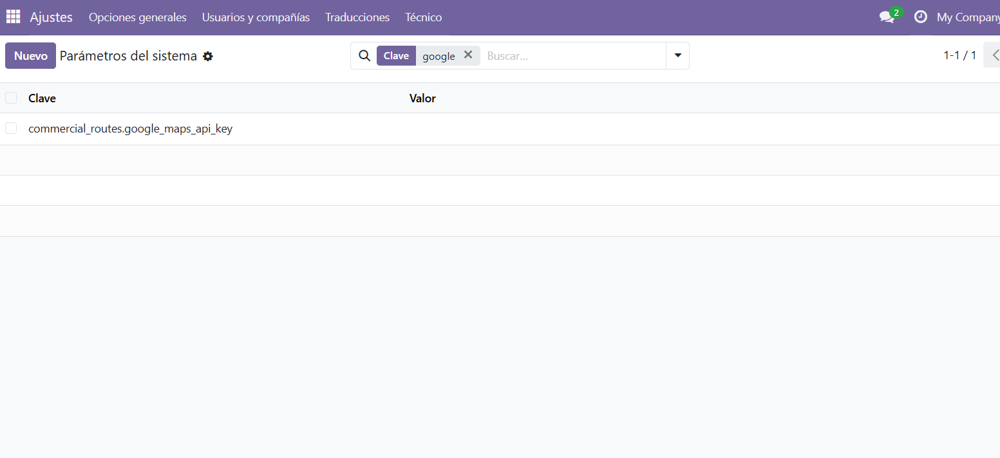

Plan, optimize and track every field sales visit — all inside Odoo 19. No more juggling between Odoo, Google Maps and WhatsApp notes.
Odoo 19 Community & Enterprise Sales Google Maps Route OptimizationFrom planning the visit list to logging the outcome of each stop — the full sales cycle in one place.
Filter customers by city and a custom Zone field (e.g. "North Industrial", "City Centre") to build focused, territory-based visit lists in seconds.
Drag stops to reorder manually, or let the nearest-neighbour algorithm sort them by shortest driving distance automatically — with one click.
Open the full route in Google Maps with all waypoints pre-loaded and ready to navigate. Works on desktop and mobile browsers.
Mark each stop: Order Placed, No Order, Not Available, or Callback. Add free-text notes with observations for each visit.
Every visit is stored on the customer card. Managers see the full interaction timeline — date, result and notes — without leaving the contact form.
Geocode all customer addresses in one click using Odoo's native Geocoding API integration. Coordinates saved on each partner record automatically.




Three steps from planning to closing the route.
Create a route, set the date and assign a salesperson. Use the city and zone filters to find the right customers, then add them with checkboxes. Each stop shows phone, city, zone and GPS status.
Choose your ordering method:
Start the route and mark each stop as Visited. Select the outcome:
Add observations. All visits are stored on the customer card for future reference.
| Item | Detail |
|---|---|
| Odoo Version | 19.0 Community & Enterprise |
| Dependencies | base, contacts, mail, base_geolocalize |
| New Models | commercial.route, commercial.route.stop |
| Extended Models | res.partner, res.config.settings |
| New Fields on Partner | Zone (x_zona) — coordinates use Odoo native fields |
| Security Groups | User (create/edit own routes), Manager (full access) |
| Geocoding | Odoo native base_geolocalize (Google Maps API) |
| License | OPL-1 |